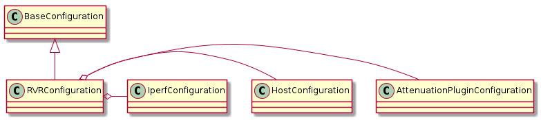
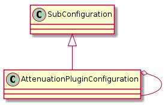
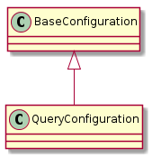
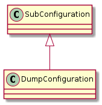
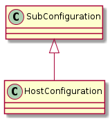
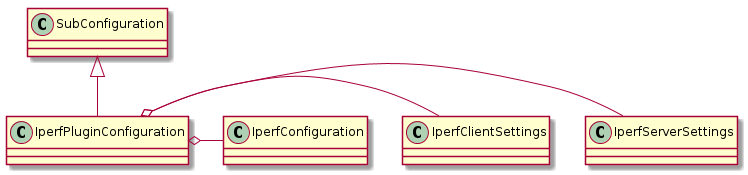

This is a plugin for the CameraObscura’s rvr command to allow it to be run by the ape.
RVR(*args, **kwargs) |
A plugin for the RVR front-end |
The RVRPlugin has four parameters in its arguments so the configuration text will mirror that. The configuration needs to be a sub-section of the [PLUGINS] section.
configuration = """
[[RVR]]
# these first two lines are needed by the ape
plugin = RVR
module = cameraobscura.plugins.rvrplugin
"""
Since the configuration is being changed to use ConfigObj, a configspec should be used to validate the configuration.
rvr_configuration_specification = """
[attenuation]
start = integer(default=0)
stop = integer(default=9223372036854775807)
name = option('mockattenuator', 'weinschelp', default='weinschelp')
control_ip = string
step_sizes = int_list(default=list(1,))
step_change_thresholds = int_list(default=None)
[dut]
username = string
control_ip = string
test_ip = string
password = string(default=None)
connection_type = string(default='ssh')
timeout = float(default=1)
prefix = string(default=None)
operating_system = option('cygwin', 'linux', default='linux')
[server]
username = string
control_ip = string
test_ip = string
password = string(default=None)
connection_type = string(default='ssh')
timeout = float(default=1)
prefix = string(default=None)
operating_system = option('cygwin', 'linux', default='linux')
[iperf]
direction = force_list(default=list('downstream', 'upstream'))
parallel = integer(default=None)
"""
The help-sections.
sections = OrderedDict()
sections['name'] = '{bold}RVR{reset} -- a bandwith with attenuation measurer'
sections['description'] = '{bold}RVR{reset} runs the CameraObscura rate-vs-range implementation.'
sections['configuration'] = configuration
#sections['see also'] = ''
sections['options'] = """
The configuration options --
{bold}end{reset} : an absolute time given as a time-stamp that can be interpreted by `dateutil.parser.parse`. This is for the cases where you have a specific time that you want the sleep to end.
{bold}total{reset} : a relative time given as pairs of '<amount> <units>' -- e.g. '3.4 hours'. Most units only use the first letter, but since `months` and `minutes` both start with `m`, you have to use two letters to specify them. The sleep will stop at the start of the sleep + the total time given.
{bold}interval{reset} : The amount of time beween reports of the time remaining (default = 1 second). Use the same formatting as the `total` option.
{bold}verbose{reset} : If True (the default) then report time remaining at specified intervals while the sleep runs.
One of {bold}end{reset} or {bold}total{reset} needs to be specified. Everything else is optional.
"""
sections['author'] = 'ape'
This is meant for the top-level (it replaces the ‘[other]’ section).

RVRConfiguration(sets allow extras to True) |
The Main configuration |
RVRConfiguration.attenuation |
An AttenuationPluginConfiguration |
RVRConfiguration.dut |
Host Configuration for the dut |
RVRConfiguration.server |
Host Configuration for the server |
RVRConfiguration.iperf |
Iperf Configuration |
# need plugin_name
other_configuration_configspec = """
{folder_option} = string(default='{folder}')
{test_name} = string(default='{name}')
{repetitions_option} = integer(default={repetitions})
{recovery_option} = float(default={recovery})
""".format(folder_option=RVRConstants.result_location,
folder=RVRConstants.default_result_location,
test_name=RVRConstants.test_name,
name=RVRConstants.default_test_name,
repetitions_option=RVRConstants.repetitions,
repetitions=RVRConstants.default_repetitions,
recovery_option=RVRConstants.recovery_time,
recovery=RVRConstants.default_recovery_time)
In order to break this each sub-section gets its own SubConfiguration. This means that it has to accept extra sections that it doesn’t know about. This makes it somewhat fragile. A separate check might be in order (outside of the validator).
The rest of the configurations are sub-classes of the Ape’s sub-configuration. They were meant to do the configuration for the classes used in the plugin’s product, but mapping everything is getting too hard so I’m just mapping the ConfigObj object the ConfigurationAdapter when it’s needed and passing in the sub-section dictonary when it’s needed (like in the Iperf Configuration).
Here’s what the Configurations are inheriting from the Ape’s SubConfiguration
SubConfiguration(source, section_name[, ...]) |
Abstract base class for configurations |
SubConfiguration.check_methods |
dict of extra check methods for the validator |
SubConfiguration.configspec_source |
abstract: implement as configspec string |
SubConfiguration.sample |
Creates a sample configuration section using the configspec_source |
SubConfiguration.constants |
object with string constants (see SubConfigurationConstants) |
SubConfiguration.validation_outcome |
Outcome of validating the configuration |
SubConfiguration.plugin_name |
Gets the plugin name from the section |
SubConfiguration.validator |
validator for the configuration |
SubConfiguration.configspec |
A configspec built from configspec_source for validation |
SubConfiguration.update(section) |
Uses ‘updates_section’ to build configuration from other section |
SubConfiguration.process_errors() |
processes configuration, validation_outcome and logs the errors |
SubConfiguration.check_extra_values([warn_user]) |
checks the configuration for values not in the configspec |
SubConfiguration.check_rep() |
Calls process_errors |
SubConfiguration.__getattr__(key) |
Passes key to self.configuration |
That last method (__gettattr__) might cause you some problems. It is intended to let the user use the sub-configurations using dot-notation but if you ask for a section or option (if you’re already in a section) and it doesn’t exist, this will raise an IndexError.
A sub-configuration for the attenuation sub-section.

AttenuationPluginConfigurationConfiguration |
attenuation_configspec = """
control_ip = string
start = integer(default=0)
stop = integer(default={maxint})
name = option('weinschelp', 'mockattenuator', 'MockAttenuator', 'WeinschelP', default='WeinschelP')s
step_sizes = int_list(default=list(1,))
step_change_thresholds = int_list(default=None)
reversal_limit = integer(default=None)
""".format(maxint=sys.maxint)

A configuration for the queries.
query_configspec = """
filename = string(default='query.csv')
timeout = float(default=10)
trap_errors = boolean(default=True)
__many__ = list(min=2, max=2)
"""

DumpConfiguration |
|
DumpConfiguration.configspec_source |
A configuration for the dump.
dump_configspec = """
filename = string(default='dump.csv')
timeout = float(default=5)
"""
To match the original code dut and server sections are required.
node_configspec = """
username = string
password = string(default=None)
control_ip = string
# this identifies the type (only 'telnet', 'ssh', or 'fake')
connection_type = string(default='{connection_type}')
# address of the interface to test
test_ip = string
# connection time-out in seconds
timeout = float(default={timeout})
# optional prefix to add to ALL commands (default: None)
# this will be added with a space (i.e. <prefix> <command>)
# so if needed, add a semicolon like in the example between the PATH and adb
prefix = string(default=None)
# the operating system for the DUT
operating_system = string(default='{operating_system}')
# there are too many options for the different connection-types
# so you can add necessary parameters but make sure the name
# matches the parameter name
# e.g. if you need to set the port:
# port=52686
__many__ = string
""".format(connection_type=HostConstants.default_type,
timeout=HostConstants.default_timeout,
operating_system=HostConstants.default_operating_system)

HostConfiguration |
The IperfPluginConfiguration is a mash-up of the Ape’s configspec and the current CameraObscura IperfSettings. This currently assumes symmetric arguments. Eventually it should be extended so the two nodes can get different parameters.
Note
I have to add Plugin to the configuration names because the CameraObscura already has configuration’s with the same names without ‘Plugin’ (e.g. IperfConfiguration).

IperfPluginConfiguration |
|
IperfPluginConfiguration.direction |
|
IperfPluginConfiguration.server_settings |
|
IperfPluginConfiguration.client_settings |
|
IperfPluginConfiguration.iperf_configuration |
Most of the configspec is being defined in the ape, but the direction is added here since it’s specific to this code.
def check_direction(value):
"""
A check-method for the configuration validation
"""
try:
# accept if first letter is u,d, or b
if value[0].lower() in 'udb':
return value
except TypeError:
raise VdtValueError(value)
raise VdtValueError(value)
return
iperf_checks.update({'check_direction': check_direction})
iperf_configspec = """
direction = check_direction(default=both)
"""
iperf_configspec += ape_iperf_configspec
In retrospect the configspec is overkill, I forgot that I set up so much parameter checking already, but I guess it’s better too be too safe rather than not safe enough.
The main purpose of this class is to bridge the old configurations made in the CameraObscura (using the old APE’s configuration adapter) and the new ape’s plugin-system which uses configobj instead.